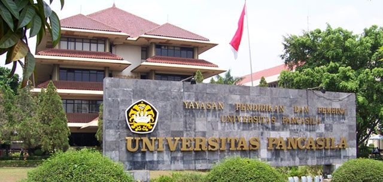
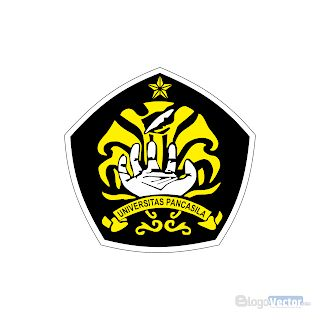

Universitas Pancasila (UP) adalah salah satu perguruan tinggi swasta terkemuka dan elit di Indonesia yang didirikan pada tanggal 28 Oktober 1966. Universitas ini memegang akreditasi nasional tertinggi, yaitu "Unggul" dari BAN-PT. Sesuai dengan namanya, kampus ini mengintegrasikan nilai-nilai luhur Pancasila ke dalam visi, misi, serta kurikulum pendidikannya.